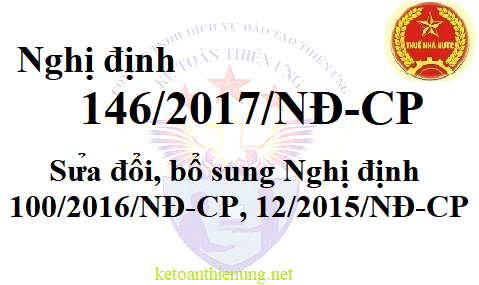

Nghị định 146/2017/NĐ-CP ngày 15/12/2017 của Chính phủ Sửa đổi bổ sung Nghị định 100/2016/NĐ-CP và 12/2015/NĐ-CP về Luật thuế giá trị gia tăng và thuế thu nhập doanh nghiệp.
|
CHÍNH PHỦ ------- |
CỘNG HÒA XÃ HỘI CHỦ NGHĨA VIỆT NAM Độc lập - Tự do - Hạnh phúc --------------- |
| Số: 146/2017/NĐ-CP | Hà Nội, ngày 15 tháng 12 năm 2017 |
NGHỊ ĐỊNH
SỬA ĐỔI, BỔ SUNG MỘT SỐ ĐIỀU CỦA NGHỊ ĐỊNH SỐ 100/2016/NĐ-CP NGÀY 01 THÁNG 7 NĂM 2016 VÀ NGHỊ ĐỊNH SỐ 12/2015/NĐ-CP NGÀY 12 THÁNG 02 NĂM 2015 CỦA CHÍNH PHỦ
SỬA ĐỔI, BỔ SUNG MỘT SỐ ĐIỀU CỦA NGHỊ ĐỊNH SỐ 100/2016/NĐ-CP NGÀY 01 THÁNG 7 NĂM 2016 VÀ NGHỊ ĐỊNH SỐ 12/2015/NĐ-CP NGÀY 12 THÁNG 02 NĂM 2015 CỦA CHÍNH PHỦ
Căn cứ Luật tổ chức Chính phủ ngày 19 tháng 6 năm 2015;
Căn cứ Luật thuế giá trị gia tăng ngày 03 tháng 6 năm 2008; Luật sửa đổi, bổ sung một số điều của Luật thuế giá trị gia tăng ngày 19 tháng 6 năm 2013; Luật sửa đổi, bổ sung một số điều của Luật thuế giá trị gia tăng, Luật thuế tiêu thụ đặc biệt và Luật quản lý thuế ngày 06 tháng 4 năm 2016;
Căn cứ Luật thuế thu nhập doanh nghiệp ngày 03 tháng 6 năm 2008; Luật sửa đổi, bổ sung một số điều của Luật thuế thu nhập doanh nghiệp ngày 19 tháng 6 năm 2013;
Căn cứ Luật sửa đổi, bổ sung một số điều của các Luật về thuế ngày 26 tháng 11 năm 2014;
Theo đề nghị của Bộ trưởng Bộ Tài chính;
Chính phủ ban hành Nghị định sửa đổi, bổ sung một số điều của Nghị định số 100/2016/NĐ-CP ngày 01 tháng 7 năm 2016 và Nghị định số 12/2015/NĐ-CP ngày 12 tháng 02 năm 2015 của Chính phủ.
Điều 1. Sửa đổi, bổ sung một số điều của Nghị định số 209/2013/NĐ-CP ngày 18 tháng 12 năm 2013 của Chính phủ quy định chi tiết và hướng dẫn thi hành một số điều của Luật thuế giá trị gia tăng, đã được sửa đổi bổ sung tại Nghị định số 100/2016/NĐ-CP ngày 01 tháng 7 năm 2016 của Chính phủ
1. Khoản 11 Điều 3 được sửa đổi, bổ sung như sau:
“11. Sản phẩm xuất khẩu là tài nguyên, khoáng sản khai thác chưa chế biến thành sản phẩm khác.
Sản phẩm xuất khẩu là hàng hóa được chế biến trực tiếp từ nguyên liệu chính là tài nguyên, khoáng sản có tổng trị giá tài nguyên, khoáng sản cộng với chi phí năng lượng chiếm từ 51% giá thành sản xuất sản phẩm trở lên trừ các trường hợp sau:
- Sản phẩm xuất khẩu được chế biến từ tài nguyên, khoáng sản do cơ sở kinh doanh trực tiếp khai thác và chế biến hoặc thuê cơ sở khác chế biến mà trong quy trình chế biến đã thành sản phẩm khác sau đó lại tiếp tục chế biến ra sản phẩm xuất khẩu (quy trình chế biến khép kín hoặc thành lập phân xưởng, nhà máy chế biến theo từng công đoạn) thì sản phẩm xuất khẩu này thuộc đối tượng áp dụng thuế suất thuế giá trị gia tăng 0% nếu đáp ứng được các điều kiện theo quy định tại điểm c khoản 2 Điều 12 Luật thuế giá trị gia tăng.
- Sản phẩm xuất khẩu được chế biến từ tài nguyên, khoáng sản do cơ sở kinh doanh mua về chế biến hoặc thuê cơ sở khác chế biến mà trong quy trình chế biến đã thành sản phẩm khác sau đó lại tiếp tục chế biến ra sản phẩm xuất khẩu (quy trình chế biến khép kín hoặc thành lập phân xưởng, nhà máy chế biến theo từng công đoạn) thì sản phẩm xuất khẩu này thuộc đối tượng áp dụng thuế suất thuế giá trị gia tăng 0% nếu đáp ứng được các điều kiện theo quy định tại điểm c khoản 2 Điều 12 Luật thuế giá trị gia tăng.
- Sản phẩm xuất khẩu được chế biến từ nguyên liệu chính không phải là tài nguyên, khoáng sản (tài nguyên, khoáng sản đã chế biến thành sản phẩm khác) do cơ sở kinh doanh mua về chế biến hoặc thuê cơ sở khác chế biến thành sản phẩm xuất khẩu thì sản phẩm xuất khẩu này thuộc đối tượng áp dụng thuế suất thuế giá trị gia tăng 0% nếu đáp ứng được các điều kiện theo quy định tại điểm c khoản 2 Điều 12 Luật thuế giá trị gia tăng.
Tài nguyên, khoáng sản quy định tại khoản 23 Điều 5 của Luật thuế giá trị gia tăng là tài nguyên, khoáng sản có nguồn gốc trong nước gồm: Khoáng sản kim loại; khoáng sản không kim loại; dầu thô; khí thiên nhiên; khí than.
Trị giá tài nguyên, khoáng sản đưa vào chế biến được xác định như sau: Đối với tài nguyên, khoáng sản trực tiếp khai thác là chi phí trực tiếp, gián tiếp khai thác ra tài nguyên, khoáng sản không bao gồm chi phí vận chuyển tài nguyên, khoáng sản từ nơi khai thác đến nơi chế biến; đối với tài nguyên, khoáng sản mua để chế biến tiếp là giá thực tế mua không bao gồm chi phí vận chuyển tài nguyên, khoáng sản từ nơi mua đến nơi chế biến.
Chi phí năng lượng gồm: Nhiên liệu, điện năng, nhiệt năng.
Tỷ lệ trị giá tài nguyên, khoáng sản và chi phí năng lượng trên giá thành sản xuất sản phẩm được xác định căn cứ vào quyết toán năm trước và tỷ lệ này được áp dụng ổn định trong năm xuất khẩu. Trường hợp năm đầu tiên xuất khẩu sản phẩm thì tỷ lệ trị giá tài nguyên, khoáng sản và chi phí năng lượng trên giá thành sản xuất sản phẩm được xác định theo phương án đầu tư và tỷ lệ này được áp dụng ổn định trong năm xuất khẩu; trường hợp không có phương án đầu tư thì tỷ lệ trị giá tài nguyên, khoáng sản và chi phí năng lượng trên giá thành sản xuất sản phẩm được xác định theo thực tế của sản phẩm xuất khẩu.
Bộ Tài chính chủ trì, phối hợp với các cơ quan liên quan hướng dẫn cụ thể việc xác định tài nguyên, khoáng sản khai thác chưa được chế biến thành sản phẩm khác quy định tại khoản này.”
2. Sửa đổi, bổ sung khoản 3 Điều 10 như sau:
“3. Cơ sở kinh doanh trong tháng (đối với trường hợp kê khai theo tháng), quý (đối với trường hợp kê khai theo quý) có hàng hóa, dịch vụ xuất khẩu bao gồm cả trường hợp: Hàng hóa nhập khẩu sau đó xuất khẩu vào khu phi thuế quan; hàng hóa nhập khẩu sau đó xuất khẩu ra nước ngoài, có số thuế giá trị gia tăng đầu vào chưa được khấu trừ từ 300 triệu đồng trở lên thì được hoàn thuế giá trị gia tăng theo tháng, quý; trường hợp trong tháng, quý số thuế giá trị gia tăng đầu vào chưa được khấu trừ chưa đủ 300 triệu đồng thì được khấu trừ vào tháng, quý tiếp theo; trường hợp vừa có hàng hóa, dịch vụ xuất khẩu, vừa có hàng hóa, dịch vụ tiêu thụ nội địa nếu sau khi bù trừ với số thuế phải nộp, số thuế giá trị gia tăng đầu vào chưa được khấu trừ của hàng hóa, dịch vụ xuất khẩu còn lại từ 300 triệu đồng trở lên thì cơ sở kinh doanh được hoàn thuế. Cơ sở kinh doanh phải hạch toán riêng số thuế giá trị gia tăng đầu vào sử dụng cho sản xuất kinh doanh hàng hóa, dịch vụ xuất khẩu, trường hợp không hạch toán riêng được thì số thuế giá trị gia tăng đầu vào xác định theo tỷ lệ giữa doanh thu của hàng hóa, dịch vụ xuất khẩu trên tổng doanh thu hàng hóa, dịch vụ của các kỳ khai thuế giá trị gia tăng tính từ kỳ khai thuế tiếp theo kỳ hoàn thuế liền trước đến kỳ đề nghị hoàn thuế hiện tại.
Cơ sở kinh doanh không được hoàn thuế giá trị gia tăng đối với trường hợp: Hàng hóa nhập khẩu sau đó xuất khẩu mà hàng hóa xuất khẩu đó không thực hiện việc xuất khẩu tại địa bàn hoạt động hải quan theo quy định của pháp luật về hải quan; hàng hóa xuất khẩu không thực hiện việc xuất khẩu tại địa bàn hoạt động hải quan theo quy định của pháp luật về hải quan.
Cơ quan thuế thực hiện hoàn thuế trước, kiểm tra sau đối với người nộp thuế sản xuất hàng hóa xuất khẩu không bị xử lý đối với hành vi buôn lậu vận chuyển trái phép hàng hóa qua biên giới, trốn thuế, gian lận thuế gian lận thương mại trong thời gian hai năm liên tục; người nộp thuế không thuộc đối tượng rủi ro cao theo quy định của Luật quản lý thuế và các văn bản hướng dẫn thi hành.”
Điều 2. Sửa đổi, bổ sung điểm o khoản 2 Điều 9 Nghị định số 218/2013/NĐ-CP ngày 26 tháng 12 năm 2013 của Chính phủ quy định chi tiết và hướng dẫn thi hành Luật thuế thu nhập doanh nghiệp, đã được sửa đổi, bổ sung tại khoản 7 Điều 1 Nghị định số 12/2015/NĐ-CP ngày 12 tháng 02 năm 2015 của Chính phủ
“o) Phần chi vượt mức 03 triệu đồng/tháng/người để trích nộp quỹ hưu trí tự nguyện, mua bảo hiểm hưu trí tự nguyện, bảo hiểm nhân thọ cho người lao động; phần vượt mức quy định của pháp luật về bảo hiểm xã hội, về bảo hiểm y tế để trích nộp các quỹ có tính chất an sinh xã hội (bảo hiểm xã hội, bảo hiểm hưu trí bổ sung bắt buộc), quỹ bảo hiểm y tế và quỹ bảo hiểm thất nghiệp cho người lao động;
Khoản chi trích nộp quỹ hưu trí tự nguyện, quỹ có tính chất an sinh xã hội, mua bảo hiểm hưu trí tự nguyện, bảo hiểm nhân thọ cho người lao động được tính vào chi phí được trừ ngoài việc không vượt mức quy định tại khoản này còn phải được ghi cụ thể điều kiện hưởng và mức hưởng tại một trong các hồ sơ sau: Hợp đồng lao động; Thỏa ước lao động tập thể; Quy chế tài chính của Công ty, Tổng công ty, Tập đoàn; Quy chế thưởng do Chủ tịch Hội đồng quản trị Tổng giám đốc, Giám đốc quy định theo quy chế tài chính của Công ty, Tổng công ty;”.
Điều 3. Điều khoản thi hành
Nghị định này có hiệu lực thi hành từ ngày 01 tháng 02 năm 2018.
Điều 4. Trách nhiệm tổ chức thực hiện
1. Bộ Tài chính hướng dẫn thi hành Nghị định này.
2. Các Bộ trưởng, Thủ trưởng cơ quan ngang bộ, Thủ trưởng cơ quan thuộc Chính phủ, Chủ tịch Ủy ban nhân dân tỉnh, thành phố trực thuộc trung ương và các tổ chức, cá nhân có liên quan chịu trách nhiệm thi hành Nghị định này.
|
Nơi nhận: - Ban Bí thư Trung ương Đảng; - Thủ tướng, các Phó Thủ tướng Chính phủ; - Các bộ, cơ quan ngang bộ, cơ quan thuộc Chính phủ; - HĐND, UBND các tỉnh, thành phố trực thuộc trung ương; - Văn phòng Trung ương và các Ban của Đảng; - Văn phòng Tổng Bí thư; - Văn phòng Chủ tịch nước; - Hội đồng dân tộc và các Ủy ban của Quốc hội; - Văn phòng Quốc hội; - Tòa án nhân dân tối cao; - Viện kiểm sát nhân dân tối cao; - Kiểm toán nhà nước; - Ủy ban Giám sát tài chính Quốc gia; - Ngân hàng Chính sách xã hội; - Ngân hàng Phát triển Việt Nam; - Ủy ban trung ương Mặt trận Tổ quốc Việt Nam; - Cơ quan trung ương của các đoàn thể; - VPCP: BTCN, các PCN, Trợ lý TTg, TGĐ Cổng TTĐT, các Vụ, Cục, đơn vị trực thuộc, Công báo; - Lưu: VT, KTTH (2b).KN 204 |
TM. CHÍNH PHỦ
THỦ TƯỚNG
Nguyễn Xuân Phúc
|
Kế toán Diệu Tâm.
--------------------------------------------------------
--------------------------------------------------------
